vignettes/differentially-methylated-regions.Rmd
differentially-methylated-regions.Rmd
library(mesa)
#> Loading required package: qsea
#> Loading required package: dplyr
#>
#> Attaching package: 'dplyr'
#> The following objects are masked from 'package:stats':
#>
#> filter, lag
#> The following objects are masked from 'package:base':
#>
#> intersect, setdiff, setequal, union
#>
#> Attaching package: 'mesa'
#> The following object is masked from 'package:qsea':
#>
#> getPCA
library(ggplot2)One very important question in analysis of ME-Seq is the calculation of differentially methylated regions. This is the statistical determination of whether there is a change in the amount of methylation between certain conditions. It should be noted that technically these are differentially methylated windows, but we use the more common term here.
This is a computationally expensive process, so we recommend using
paralellisation where possible, as detailed at the end of the
introduction: vignette("introduction"). Here we enable the
global parallelisation, with two cores:
setMesaParallel(nCores = 2)
#> Parallelisation turned on for the functions in the mesa package, currently using 2 cores.
#> Control the number of cores by calling BiocParallel::register.To calculate DMRs, mesa wraps several functions from
qsea into a single function, called
calculateDMRs. The mandatory arguments for this are which
variable to make comparisons on (as a string), and what
contrasts (comparisons) to perform.
For instance, taking the exampleTumourNormal data, we
can ask which windows are differentially methylated between the
different states of the tumour column in the sampleTable.
Here you can see that this contains two options, “Tumour” and “Normal” -
here the “Normal” samples represent adjacent non-cancerous tissue from
the same patients.
exampleTumourNormal |>
getSampleTable() |>
dplyr::select(sample_name, tumour)
#> sample_name tumour
#> Colon1_N Colon1_N Normal
#> Colon1_T Colon1_T Tumour
#> Colon2_N Colon2_N Normal
#> Colon2_T Colon2_T Tumour
#> Lung1_N Lung1_N Normal
#> Lung1_T Lung1_T Tumour
#> Lung2_N Lung2_N Normal
#> Lung2_T Lung2_T Tumour
#> Lung3_N Lung3_N Normal
#> Lung3_T Lung3_T TumourWe therefore set variable = "tumour", to select this
column. There are several options we can pass to the
contrasts option (i.e. the comparisons), in order to
specify exactly which comparisons we want to calculate.
The contrasts option can be a few string settings, such
as "all" or "first":
exampleTumourNormal |>
calculateDMRs(variable = "tumour",
contrasts = "first")
#> Calculating the first possible contrast on the tumour column.
#> Generating table of nrpm values for 819 regions across 10 samples.
#> Loading required namespace: GenomeInfoDb
#> Fitting initial GLM on 309 windows, using 2 cores
#> Performing contrast Normal_vs_Tumour
#> Contrasts Complete
#> selecting regions from contrast Normal_vs_Tumour
#> selected 23/309 windows
#> adding test results from Normal_vs_Tumour
#> # A tibble: 23 × 11
#> seqnames start end CpG_density Normal_vs_Tumour_log2FC
#> <fct> <int> <int> <dbl> <dbl>
#> 1 7 27102901 27103200 10.8 -1.94
#> 2 7 27103501 27103800 13.1 -1.88
#> 3 7 27103801 27104100 7.83 -1.33
#> 4 7 27108301 27108600 15.7 -1.18
#> 5 7 27108601 27108900 16.1 -0.933
#> 6 7 27144601 27144900 11.1 -1.47
#> 7 7 27144901 27145200 16.3 -1.30
#> 8 7 27156301 27156600 18.5 -2.57
#> 9 7 27159901 27160200 9.48 1.16
#> 10 7 27164701 27165000 13.8 -2.25
#> # ℹ 13 more rows
#> # ℹ 6 more variables: Normal_vs_Tumour_adjPval <dbl>,
#> # Normal_vs_Tumour_deltaBeta <dbl>, Normal_beta_means <dbl>,
#> # Tumour_beta_means <dbl>, Normal_nrpm_means <dbl>, Tumour_nrpm_means <dbl>Or a string with the two groups separated by "_vs_",
i.e.
exampleTumourNormal |>
calculateDMRs(variable = "tumour",
contrasts = "Tumour_vs_Normal")
#> Generating table of nrpm values for 819 regions across 10 samples.
#> Fitting initial GLM on 309 windows, using 2 cores
#> Performing contrast Tumour_vs_Normal
#> Contrasts Complete
#> selecting regions from contrast Tumour_vs_Normal
#> selected 23/309 windows
#> adding test results from Tumour_vs_Normal
#> # A tibble: 23 × 11
#> seqnames start end CpG_density Tumour_vs_Normal_log2FC
#> <fct> <int> <int> <dbl> <dbl>
#> 1 7 27102901 27103200 10.8 1.94
#> 2 7 27103501 27103800 13.1 1.88
#> 3 7 27103801 27104100 7.83 1.33
#> 4 7 27108301 27108600 15.7 1.18
#> 5 7 27108601 27108900 16.1 0.933
#> 6 7 27144601 27144900 11.1 1.47
#> 7 7 27144901 27145200 16.3 1.30
#> 8 7 27156301 27156600 18.5 2.57
#> 9 7 27159901 27160200 9.48 -1.16
#> 10 7 27164701 27165000 13.8 2.25
#> # ℹ 13 more rows
#> # ℹ 6 more variables: Tumour_vs_Normal_adjPval <dbl>,
#> # Tumour_vs_Normal_deltaBeta <dbl>, Normal_beta_means <dbl>,
#> # Tumour_beta_means <dbl>, Normal_nrpm_means <dbl>, Tumour_nrpm_means <dbl>Or we can provide a dataframe containing the contrasts that we wish
to perform (in columns group1 and group2):
DMRs <- exampleTumourNormal |>
calculateDMRs(variable = "tumour",
contrasts = tibble(group1 = "Tumour", group2 = "Normal"))
#> Generating table of nrpm values for 819 regions across 10 samples.
#> Fitting initial GLM on 309 windows, using 2 cores
#> Performing contrast Tumour_vs_Normal
#> Contrasts Complete
#> selecting regions from contrast Tumour_vs_Normal
#> selected 23/309 windows
#> adding test results from Tumour_vs_NormalOne final option is that we can use a string such as “all_vs_X” or
“X_vs_all” to create all contrasts against a specific value of the
variable, for instance this will generate contrasts of the other values
of type compared with type = NormalLung:
exampleTumourNormal |>
calculateDMRs(variable = "type",
contrasts = "all_vs_NormalLung")
#> Calculating all (4) possible contrasts against NormalLung on the type column.
#> Generating table of nrpm values for 819 regions across 10 samples.
#> Fitting initial GLM on 309 windows, using 2 cores
#> Performing contrast NormalColon_vs_NormalLung
#> Performing contrast CRC_vs_NormalLung
#> Performing contrast LUAD_vs_NormalLung
#> Performing contrast LUSC_vs_NormalLung
#> Contrasts Complete
#> selecting regions from contrast NormalColon_vs_NormalLung
#> selected 18/309 windows
#> selecting regions from contrast CRC_vs_NormalLung
#> selected 44/309 windows
#> selecting regions from contrast LUAD_vs_NormalLung
#> selected 23/309 windows
#> selecting regions from contrast LUSC_vs_NormalLung
#> selected 57/309 windows
#> adding test results from NormalColon_vs_NormalLung
#> adding test results from CRC_vs_NormalLung
#> adding test results from LUAD_vs_NormalLung
#> adding test results from LUSC_vs_NormalLung
#> # A tibble: 94 × 26
#> seqnames start end CpG_density NormalColon_vs_NormalLung_log2FC
#> <fct> <int> <int> <dbl> <dbl>
#> 1 7 25852801 25853100 18.4 1.75
#> 2 7 25860601 25860900 11.6 3.35
#> 3 7 27044401 27044700 14.7 0.775
#> 4 7 27087601 27087900 7.24 1.73
#> 5 7 27087901 27088200 18.7 1.67
#> 6 7 27088201 27088500 19.7 2.12
#> 7 7 27088501 27088800 13.4 1.61
#> 8 7 27106501 27106800 19.0 1.42
#> 9 7 27108601 27108900 16.1 0.860
#> 10 7 27213301 27213600 15.4 3.47
#> # ℹ 84 more rows
#> # ℹ 21 more variables: NormalColon_vs_NormalLung_adjPval <dbl>,
#> # NormalColon_vs_NormalLung_deltaBeta <dbl>, CRC_vs_NormalLung_log2FC <dbl>,
#> # CRC_vs_NormalLung_adjPval <dbl>, CRC_vs_NormalLung_deltaBeta <dbl>,
#> # LUAD_vs_NormalLung_log2FC <dbl>, LUAD_vs_NormalLung_adjPval <dbl>,
#> # LUAD_vs_NormalLung_deltaBeta <dbl>, LUSC_vs_NormalLung_log2FC <dbl>,
#> # LUSC_vs_NormalLung_adjPval <dbl>, LUSC_vs_NormalLung_deltaBeta <dbl>, …The output of calculateDMRs is a dataframe, where each
row corresponds to a window which was considered to be differentially
methylated at the False Discovery Rate (FDR) threshold applied to the
adjusted p-values. The first four columns include the window
information: seqnames (chromosome), start and
end of the window and the CpG_density. The
next columns are related to the contrasts undertaken, giving the log2
fold change, Tumour_vs_Normal_log2FC, the adjusted p-value,
Tumour_vs_Normal_adjPval, and the difference in average
beta values for the samples with each different type,
Tumour_vs_Normal_deltaBeta. These additional columns are
repeated if multiple contrasts are calculated in one call to
calculateDMRs. Following these contrast specific columns
there is a block of columns that includes the average beta and nrpm
values for the values of the variable under consideration,
e.g. Tumour_nrpm_means.
exampleTumourNormal |>
calculateDMRs(variable = "tumour",
contrasts = tibble(group1 = "Tumour", group2 = "Normal")) |>
colnames()
#> Generating table of nrpm values for 819 regions across 10 samples.
#> Fitting initial GLM on 309 windows, using 2 cores
#> Performing contrast Tumour_vs_Normal
#> Contrasts Complete
#> selecting regions from contrast Tumour_vs_Normal
#> selected 23/309 windows
#> adding test results from Tumour_vs_Normal
#> [1] "seqnames" "start"
#> [3] "end" "CpG_density"
#> [5] "Tumour_vs_Normal_log2FC" "Tumour_vs_Normal_adjPval"
#> [7] "Tumour_vs_Normal_deltaBeta" "Normal_beta_means"
#> [9] "Tumour_beta_means" "Normal_nrpm_means"
#> [11] "Tumour_nrpm_means"We can also get the individual data values for each differentially
methylated window, by setting keepData = TRUE inside
calculateDMRs, but this is often unnecessary (and makes
massive objects when there are a lot of contrasts), so is switched off
by default. Additionally, you can return the average values in the group
variable of the qseaSet by setting setting
keepGroupMeans = TRUE.
exampleTumourNormal |>
calculateDMRs(variable = "tumour",
contrasts = tibble(group1 = "Tumour", group2 = "Normal"),
keepData = TRUE)
#> Generating table of nrpm values for 819 regions across 10 samples.
#> Fitting initial GLM on 309 windows, using 2 cores
#> Performing contrast Tumour_vs_Normal
#> Contrasts Complete
#> selecting regions from contrast Tumour_vs_Normal
#> selected 23/309 windows
#> adding test results from Tumour_vs_Normal
#> # A tibble: 23 × 31
#> seqnames start end CpG_density Tumour_vs_Normal_log2FC
#> <fct> <int> <int> <dbl> <dbl>
#> 1 7 27102901 27103200 10.8 1.94
#> 2 7 27103501 27103800 13.1 1.88
#> 3 7 27103801 27104100 7.83 1.33
#> 4 7 27108301 27108600 15.7 1.18
#> 5 7 27108601 27108900 16.1 0.933
#> 6 7 27144601 27144900 11.1 1.47
#> 7 7 27144901 27145200 16.3 1.30
#> 8 7 27156301 27156600 18.5 2.57
#> 9 7 27159901 27160200 9.48 -1.16
#> 10 7 27164701 27165000 13.8 2.25
#> # ℹ 13 more rows
#> # ℹ 26 more variables: Tumour_vs_Normal_adjPval <dbl>,
#> # Tumour_vs_Normal_deltaBeta <dbl>, Colon1_N_beta <dbl>, Colon1_T_beta <dbl>,
#> # Colon2_N_beta <dbl>, Colon2_T_beta <dbl>, Lung1_N_beta <dbl>,
#> # Lung1_T_beta <dbl>, Lung2_N_beta <dbl>, Lung2_T_beta <dbl>,
#> # Lung3_N_beta <dbl>, Lung3_T_beta <dbl>, Colon1_N_nrpm <dbl>,
#> # Colon1_T_nrpm <dbl>, Colon2_N_nrpm <dbl>, Colon2_T_nrpm <dbl>, …We can incorporate a covariate into the DMR generation process, using
the covariates option. This enables us to calculate DMRs
with more power in situations where there is a connection between the
samples across the contrast. For instance, as the samples in this
example dataset come from two types of tissue (Lung and Colon), we can
incorporate this information into our comparison. This will enable the
identification of regions which have their methylation levels increasing
in cancer in both tissue types, but starting at a higher level in the
e.g. colon.
DMRsCovariateTissue <- exampleTumourNormal |>
calculateDMRs(variable = "tumour",
covariates = "tissue",
contrasts = tibble(group1 = "Tumour", group2 = "Normal")) |>
as_tibble()
#> Generating table of nrpm values for 819 regions across 10 samples.
#> Fitting initial GLM on 309 windows, using 2 cores
#> Performing contrast Tumour_vs_Normal
#> Contrasts Complete
#> selecting regions from contrast Tumour_vs_Normal
#> selected 29/309 windows
#> adding test results from Tumour_vs_Normal
DMRsCovariateTissue
#> # A tibble: 29 × 11
#> seqnames start end CpG_density Tumour_vs_Normal_log2FC
#> <fct> <int> <int> <dbl> <dbl>
#> 1 7 27102001 27102300 17.1 1.87
#> 2 7 27102901 27103200 10.8 1.94
#> 3 7 27103501 27103800 13.1 1.88
#> 4 7 27103801 27104100 7.83 1.32
#> 5 7 27106501 27106800 19.0 0.801
#> 6 7 27106801 27107100 13.1 1.12
#> 7 7 27108001 27108300 14.3 0.838
#> 8 7 27108301 27108600 15.7 1.15
#> 9 7 27108601 27108900 16.1 0.938
#> 10 7 27124201 27124500 18.1 0.979
#> # ℹ 19 more rows
#> # ℹ 6 more variables: Tumour_vs_Normal_adjPval <dbl>,
#> # Tumour_vs_Normal_deltaBeta <dbl>, Normal_beta_means <dbl>,
#> # Tumour_beta_means <dbl>, Normal_nrpm_means <dbl>, Tumour_nrpm_means <dbl>We can see that having included the tissue covariate we now have
rDMRsCovariateTissue |> nrow()` DMRs, rather than the 23
we had before. This is because we are now looking at which regions have
changed, taking into account that some samples are from the lung and
some are from the colon. We can go further, and incorporate the
individual patient levels, as for each patient the baseline value in
each window might be different (more than just the tissue type). This
will for instance highlight windows that were initially high in one
patient but are now even higher in their cancer. This is directly
analogous to using a paired t-test for multiple samples taken from the
same individual, and increases statistical power.
DMRsCovariatePatient <- exampleTumourNormal |>
calculateDMRs(variable = "tumour",
covariates = "patient",
contrasts = tibble(sample1 = "Tumour", sample2 = "Normal")) |>
as_tibble()
#> Generating table of nrpm values for 819 regions across 10 samples.
#> Fitting initial GLM on 309 windows, using 2 cores
#> Performing contrast Tumour_vs_Normal
#> Contrasts Complete
#> selecting regions from contrast Tumour_vs_Normal
#> selected 32/309 windows
#> adding test results from Tumour_vs_Normal
DMRsCovariatePatient
#> # A tibble: 32 × 11
#> seqnames start end CpG_density Tumour_vs_Normal_log2FC
#> <fct> <int> <int> <dbl> <dbl>
#> 1 7 26147701 26148000 11.0 -0.597
#> 2 7 27044101 27044400 13.0 -0.542
#> 3 7 27102001 27102300 17.1 1.83
#> 4 7 27102301 27102600 11.7 1.37
#> 5 7 27102901 27103200 10.8 1.95
#> 6 7 27103501 27103800 13.1 1.86
#> 7 7 27103801 27104100 7.83 1.31
#> 8 7 27108301 27108600 15.7 1.11
#> 9 7 27108601 27108900 16.1 0.923
#> 10 7 27124201 27124500 18.1 0.976
#> # ℹ 22 more rows
#> # ℹ 6 more variables: Tumour_vs_Normal_adjPval <dbl>,
#> # Tumour_vs_Normal_deltaBeta <dbl>, Normal_beta_means <dbl>,
#> # Tumour_beta_means <dbl>, Normal_nrpm_means <dbl>, Tumour_nrpm_means <dbl>Having done this there are now 32 DMRs instead of the 29 we had with incorporating the tissue effect.
Note that if you try to specify covariates which are entirely correlated with the variable, then you will get an error:
# There are no levels of `type` in common between the levels of `tumour`:
exampleTumourNormal |> getSampleTable() |> dplyr::count(tumour,type)
# so this will fail with an error
#exampleTumourNormal |>
# calculateDMRs(variable = "tumour",
# covariates = "type",
# contrasts = "first")For finer control of the calculation, you can specify the false
discovery rate (FDR) that is being applied, using FDRthres.
The default is rather lenient at 0.05, and will often return many
windows that are only marginally differentially methylated. We can also
return all windows without applying a threshold by setting
FDRthres = 1. This can be useful, for instance when
plotting a volcano plot:
allWindows <- exampleTumourNormal |>
calculateDMRs(variable = "tumour",
contrasts = "Tumour_vs_Normal",
covariates = "patient",
FDRthres = 1)
#> Generating table of nrpm values for 819 regions across 10 samples.
#> Fitting initial GLM on 309 windows, using 2 cores
#> Performing contrast Tumour_vs_Normal
#> Contrasts Complete
#> selecting regions from contrast Tumour_vs_Normal
#> selected 309/309 windows
#> adding test results from Tumour_vs_Normal
allWindows |>
mutate(significant = (Tumour_vs_Normal_adjPval <= 0.05)) |>
ggplot(aes(x = Tumour_vs_Normal_log2FC, y = -log(Tumour_vs_Normal_adjPval), col = significant)) +
geom_point() +
theme_bw() +
labs(x = "Log2 Fold Change",
y = "-Log10 Adjusted P Value")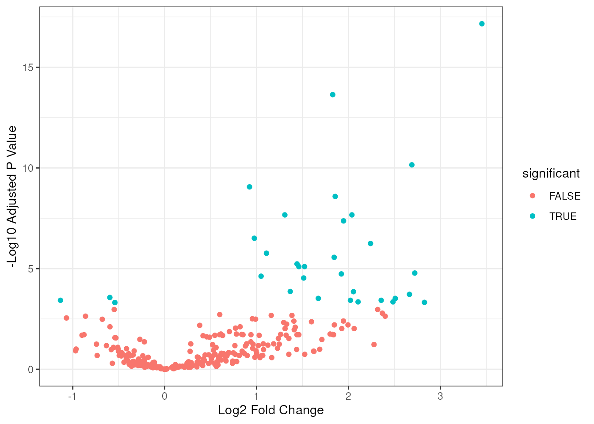
We can also use the , the difference between the average beta values between the two sets of samples. This can be a more useful metric, as it characterises windows that have clearly changed in levels of methylation.
allWindows |>
mutate(significant = (Tumour_vs_Normal_adjPval <= 0.05)) |>
ggplot(aes(x = Tumour_vs_Normal_deltaBeta, y = -log(Tumour_vs_Normal_adjPval), col = significant)) +
geom_point() +
theme_bw() +
labs(x = "Difference in average Beta Values",
y = "-Log10 Adjusted P Value")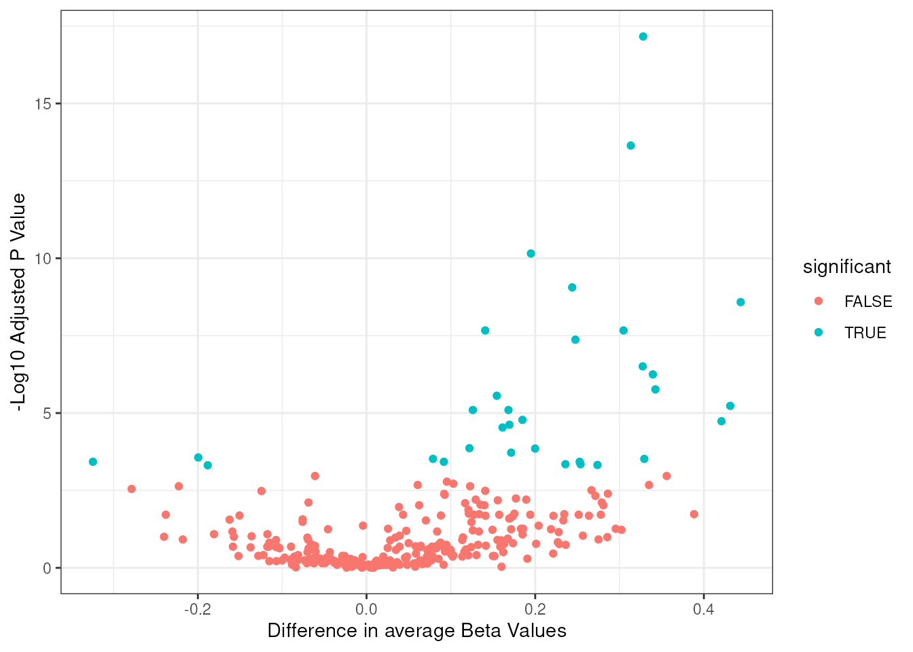
These two metrics are correlated, but do sometimes differ, particularly in regions that have beta values close to 1 in one or both samples. This is not particularly noticeable in this small subset of the data though.
allWindows |>
ggplot(aes(x = Tumour_vs_Normal_log2FC, y = Tumour_vs_Normal_deltaBeta)) +
geom_point() +
theme_bw() +
labs(x = "Log2 Fold Change",
y = "Difference in average Beta Values")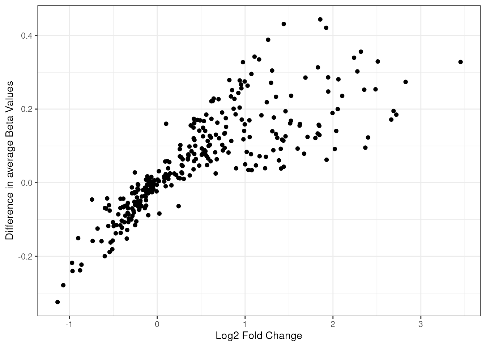
We can then annotate these regions (or any other set of regions), by
using the function annotateWindows, annotating each window
with its nearest gene, and returning information about this gene. The
result is a data frame with all the previous columns, augmented with
some columns generated by the ChIPseeker package and some
custom columns. This requires specifying what genome annotation to use,
one way of which is to use the default hg38 annotation by specifying
genome = "hg38" (or the equivalent “GRCh38”):
annoDMRs <- DMRsCovariatePatient |>
annotateWindows(genome = "hg38")
#>
#>
#> >> Using Genome: hg38 ...
#> >> Using Genome: hg38 ...
#> >> Using Genome: hg38 ...
#> Loading required package: org.Hs.eg.db
#> Loading required package: AnnotationDbi
#> Loading required package: stats4
#> Loading required package: BiocGenerics
#> Loading required package: generics
#>
#> Attaching package: 'generics'
#> The following object is masked from 'package:dplyr':
#>
#> explain
#> The following objects are masked from 'package:base':
#>
#> as.difftime, as.factor, as.ordered, intersect, is.element, setdiff,
#> setequal, union
#>
#> Attaching package: 'BiocGenerics'
#> The following object is masked from 'package:dplyr':
#>
#> combine
#> The following objects are masked from 'package:stats':
#>
#> IQR, mad, sd, var, xtabs
#> The following objects are masked from 'package:base':
#>
#> anyDuplicated, aperm, append, as.data.frame, basename, cbind,
#> colnames, dirname, do.call, duplicated, eval, evalq, Filter, Find,
#> get, grep, grepl, is.unsorted, lapply, Map, mapply, match, mget,
#> order, paste, pmax, pmax.int, pmin, pmin.int, Position, rank,
#> rbind, Reduce, rownames, sapply, saveRDS, table, tapply, unique,
#> unsplit, which.max, which.min
#> Loading required package: Biobase
#> Welcome to Bioconductor
#>
#> Vignettes contain introductory material; view with
#> 'browseVignettes()'. To cite Bioconductor, see
#> 'citation("Biobase")', and for packages 'citation("pkgname")'.
#> Loading required package: IRanges
#> Loading required package: S4Vectors
#>
#> Attaching package: 'S4Vectors'
#> The following objects are masked from 'package:dplyr':
#>
#> first, rename
#> The following object is masked from 'package:utils':
#>
#> findMatches
#> The following objects are masked from 'package:base':
#>
#> expand.grid, I, unname
#>
#> Attaching package: 'IRanges'
#> The following objects are masked from 'package:dplyr':
#>
#> collapse, desc, slice
#>
#> Attaching package: 'AnnotationDbi'
#> The following object is masked from 'package:dplyr':
#>
#> select
#> 'select()' returned 1:1 mapping between keys and columns
annoDMRs |>
colnames()
#> [1] "seqnames" "start"
#> [3] "end" "CpG_density"
#> [5] "Tumour_vs_Normal_log2FC" "Tumour_vs_Normal_adjPval"
#> [7] "Tumour_vs_Normal_deltaBeta" "annotation"
#> [9] "geneChr" "geneStart"
#> [11] "geneEnd" "geneLength"
#> [13] "geneStrand" "geneId"
#> [15] "transcriptId" "distanceToTSS"
#> [17] "ENSEMBL" "SYMBOL"
#> [19] "GENENAME" "nIslands"
#> [21] "nShore" "nShelf"
#> [23] "landscape" "inFantom"
#> [25] "shortAnno" "Normal_beta_means"
#> [27] "Tumour_beta_means" "Normal_nrpm_means"
#> [29] "Tumour_nrpm_means"The output includes which gene was assigned to that window, with an
ENSEMBL ID column, a SYMBOL column for a name
associated with that gene, and a (somewhat confusingly named)
GENENAME column with a long-form expansion of that name.
The distanceToTSS column gives how far the query window is
away from the Transcriptional Start Site of the gene. It is worth noting
this can be positive or negative, depending on which strand the gene is
on, and that some genes are very large.
annoDMRs |>
dplyr::select(seqnames, start, end, distanceToTSS, ENSEMBL, SYMBOL, GENENAME)
#> # A tibble: 32 × 7
#> seqnames start end distanceToTSS ENSEMBL SYMBOL GENENAME
#> <fct> <int> <int> <dbl> <chr> <chr> <chr>
#> 1 7 26147701 26148000 -4198 ENSG00000050344 NFE2L3 NFE2 like …
#> 2 7 27044101 27044400 -48862 ENSG00000005020 SKAP2 src kinase…
#> 3 7 27102001 27102300 5922 ENSG00000233429 HOTAIRM1 HOXA trans…
#> 4 7 27102301 27102600 6222 ENSG00000233429 HOTAIRM1 HOXA trans…
#> 5 7 27102901 27103200 6822 ENSG00000233429 HOTAIRM1 HOXA trans…
#> 6 7 27103501 27103800 7422 ENSG00000233429 HOTAIRM1 HOXA trans…
#> 7 7 27103801 27104100 7722 ENSG00000233429 HOTAIRM1 HOXA trans…
#> 8 7 27108301 27108600 12222 ENSG00000233429 HOTAIRM1 HOXA trans…
#> 9 7 27108601 27108900 12522 ENSG00000233429 HOTAIRM1 HOXA trans…
#> 10 7 27124201 27124500 2284 NA HOXA-AS2 HOXA clust…
#> # ℹ 22 more rowsThe annotation column gives a long-form explanation of
the annotation for that window, including which exon of which transcript
is assigned, while shortAnno abbreviates this just
e.g. Intron/Exon/Promoter.
annoDMRs |>
dplyr::select(start, SYMBOL, shortAnno, annotation)
#> # A tibble: 32 × 4
#> start SYMBOL shortAnno annotation
#> <int> <chr> <chr> <chr>
#> 1 26147701 NFE2L3 Distal Intergenic Distal Intergenic
#> 2 27044101 SKAP2 Intron Intron (ENST00000748166.1/ENST0000074816…
#> 3 27102001 HOTAIRM1 Exon Exon (ENST00000222718.7/3199, exon 1 of …
#> 4 27102301 HOTAIRM1 5' UTR 5' UTR
#> 5 27102901 HOTAIRM1 Intron Intron (ENST00000716605.1/100506311, int…
#> 6 27103501 HOTAIRM1 Intron Intron (ENST00000716605.1/100506311, int…
#> 7 27103801 HOTAIRM1 Intron Intron (ENST00000716605.1/100506311, int…
#> 8 27108301 HOTAIRM1 Exon Exon (ENST00000396352.8/3200, exon 3 of …
#> 9 27108601 HOTAIRM1 Exon Exon (ENST00000396352.8/3200, exon 3 of …
#> 10 27124201 HOXA-AS2 Exon Exon (ENST00000517550.1/285943, exon 3 o…
#> # ℹ 22 more rowsDetails of the full location of the gene are provided, including how long the gene is, and which transcript is being used in the annotations.
annoDMRs |>
dplyr::select(geneChr, geneStart, geneEnd, geneLength, geneStrand, geneId, transcriptId)
#> # A tibble: 32 × 7
#> geneChr geneStart geneEnd geneLength geneStrand geneId transcriptId
#> <int> <int> <int> <int> <int> <chr> <chr>
#> 1 7 26152198 26187137 34940 1 9603 ENST00000056233.4
#> 2 7 26738840 26995239 256400 2 8935 ENST00000432747.1
#> 3 7 27096079 27122885 26807 1 100506311 ENST00000716605.1
#> 4 7 27096079 27122885 26807 1 100506311 ENST00000716605.1
#> 5 7 27096079 27122885 26807 1 100506311 ENST00000716605.1
#> 6 7 27096079 27122885 26807 1 100506311 ENST00000716605.1
#> 7 7 27096079 27122885 26807 1 100506311 ENST00000716605.1
#> 8 7 27096079 27122885 26807 1 100506311 ENST00000716605.1
#> 9 7 27096079 27122885 26807 1 100506311 ENST00000716605.1
#> 10 7 27121917 27128760 6844 1 285943 ENST00000517550.1
#> # ℹ 22 more rowsFinally, for hg38, the function also returns several columns regarding whether the region lies within a CpG “island” (characterised regions of the genome with high numbers of CGs), as well as the “shores” that are 2000bp each side of the “island”, and “shelves” (a further 2000bp around these). It is possible for a region to be in multiple islands/shores/shelves simultaneously, so these columns give how many of these that they overlap.
annoDMRs |>
dplyr::select(seqnames, start, end, nIslands, nShore, nShelf, inFantom, landscape)
#> # A tibble: 32 × 8
#> seqnames start end nIslands nShore nShelf inFantom landscape
#> <fct> <int> <int> <int> <int> <int> <int> <chr>
#> 1 7 26147701 26148000 0 0 0 0 Open Sea
#> 2 7 27044101 27044400 0 0 0 0 Open Sea
#> 3 7 27102001 27102300 0 1 0 0 Shore
#> 4 7 27102301 27102600 0 1 1 0 Shore
#> 5 7 27102901 27103200 0 1 1 0 Shore
#> 6 7 27103501 27103800 1 1 1 0 Island
#> 7 7 27103801 27104100 1 1 2 0 Island
#> 8 7 27108301 27108600 1 2 1 0 Island
#> 9 7 27108601 27108900 1 3 0 0 Island
#> 10 7 27124201 27124500 1 2 0 0 Island
#> # ℹ 22 more rowsThis function works on any data frame with the columns
seqnames, start and end, or a
GRanges object.
Please note that annotating genomes is a difficult endeavour, with caveats such as the existence of multiple transcripts from each gene, non-canonical start sites and overlapping genes on opposite strands, and so the annotation may not be 100% reliable.
The underlying function being used here is annotatePeak
from the ChIPseeker package. This requires two databases, a
TxDb and an annoDb datbase. These may be given
explicitly using the arguments to annotateWindows, as for
instance for this example mouse dataset:
exampleMouse |>
getRegions() |>
annotateWindows(TxDb = "TxDb.Mmusculus.UCSC.mm10.knownGene",
annoDb = "org.Mm.eg.db")
#> >> Update txdb in cache...
#> >> Using Genome: mm10 ...
#> >> Using Genome: mm10 ...
#> >> Using Genome: mm10 ...
#> Loading required package: org.Mm.eg.db
#>
#> 'select()' returned 1:1 mapping between keys and columns
#> # A tibble: 153 × 17
#> seqnames start end CpG_density annotation geneChr geneStart geneEnd
#> <fct> <int> <int> <dbl> <chr> <int> <int> <int>
#> 1 5 142501201 142501500 5.22 Intron (E… 5 142484839 1.43e8
#> 2 5 142506601 142506900 5.98 Exon (ENS… 5 142484839 1.43e8
#> 3 5 142508101 142508400 6.80 5' UTR 5 142484839 1.43e8
#> 4 5 142523701 142524000 5.22 Intron (E… 5 142484839 1.43e8
#> 5 5 142529401 142529700 5.86 Exon (ENS… 5 142484839 1.43e8
#> 6 5 142529701 142530000 14.9 5' UTR 5 142484839 1.43e8
#> 7 5 142530001 142530300 15.4 Promoter … 5 142525838 1.43e8
#> 8 5 142538401 142538700 5.25 Intron (E… 5 142484839 1.43e8
#> 9 5 142550401 142550700 11.0 Promoter … 5 142484839 1.43e8
#> 10 5 142550701 142551000 20.8 Promoter … 5 142543618 1.43e8
#> # ℹ 143 more rows
#> # ℹ 9 more variables: geneLength <int>, geneStrand <int>, geneId <chr>,
#> # transcriptId <chr>, distanceToTSS <dbl>, ENSEMBL <chr>, SYMBOL <chr>,
#> # GENENAME <chr>, shortAnno <chr>or they may be set at a global level by using the functions
setMesaTxDb and setMesaAnnoDb:
setMesaTxDb("TxDb.Mmusculus.UCSC.mm10.knownGene")
setMesaAnnoDb("org.Mm.eg.db")Having done this, the default databases will be set appropriately:
exampleMouse |>
getRegions() |>
annotateWindows()
#> >> Using Genome: mm10 ...
#> >> Using Genome: mm10 ...
#> >> Using Genome: mm10 ...
#> 'select()' returned 1:1 mapping between keys and columns
#> # A tibble: 153 × 17
#> seqnames start end CpG_density annotation geneChr geneStart geneEnd
#> <fct> <int> <int> <dbl> <chr> <int> <int> <int>
#> 1 5 142501201 142501500 5.22 Intron (E… 5 142484839 1.43e8
#> 2 5 142506601 142506900 5.98 Exon (ENS… 5 142484839 1.43e8
#> 3 5 142508101 142508400 6.80 5' UTR 5 142484839 1.43e8
#> 4 5 142523701 142524000 5.22 Intron (E… 5 142484839 1.43e8
#> 5 5 142529401 142529700 5.86 Exon (ENS… 5 142484839 1.43e8
#> 6 5 142529701 142530000 14.9 5' UTR 5 142484839 1.43e8
#> 7 5 142530001 142530300 15.4 Promoter … 5 142525838 1.43e8
#> 8 5 142538401 142538700 5.25 Intron (E… 5 142484839 1.43e8
#> 9 5 142550401 142550700 11.0 Promoter … 5 142484839 1.43e8
#> 10 5 142550701 142551000 20.8 Promoter … 5 142543618 1.43e8
#> # ℹ 143 more rows
#> # ℹ 9 more variables: geneLength <int>, geneStrand <int>, geneId <chr>,
#> # transcriptId <chr>, distanceToTSS <dbl>, ENSEMBL <chr>, SYMBOL <chr>,
#> # GENENAME <chr>, shortAnno <chr>There are also a set of functions to manipulate the output of the DMRs. First, we will calculate a set of DMRs with the output from 10 contrasts.
allContrasts <- exampleTumourNormal |>
calculateDMRs(variable = "type",
contrasts = "all")
#> Calculating 10 possible contrasts on the type column.
#> Generating table of nrpm values for 819 regions across 10 samples.
#> Fitting initial GLM on 309 windows, using 2 cores
#> Performing contrast CRC_vs_LUAD
#> Performing contrast CRC_vs_LUSC
#> Performing contrast CRC_vs_NormalColon
#> Performing contrast CRC_vs_NormalLung
#> Performing contrast LUAD_vs_LUSC
#> Performing contrast LUAD_vs_NormalColon
#> Performing contrast LUAD_vs_NormalLung
#> Performing contrast LUSC_vs_NormalColon
#> Performing contrast LUSC_vs_NormalLung
#> Performing contrast NormalColon_vs_NormalLung
#> Contrasts Complete
#> selecting regions from contrast CRC_vs_LUAD
#> selected 33/309 windows
#> selecting regions from contrast CRC_vs_LUSC
#> selected 38/309 windows
#> selecting regions from contrast CRC_vs_NormalColon
#> selected 1/309 windows
#> selecting regions from contrast CRC_vs_NormalLung
#> selected 44/309 windows
#> selecting regions from contrast LUAD_vs_LUSC
#> selected 12/309 windows
#> selecting regions from contrast LUAD_vs_NormalColon
#> selected 13/309 windows
#> selecting regions from contrast LUAD_vs_NormalLung
#> selected 23/309 windows
#> selecting regions from contrast LUSC_vs_NormalColon
#> selected 38/309 windows
#> selecting regions from contrast LUSC_vs_NormalLung
#> selected 57/309 windows
#> selecting regions from contrast NormalColon_vs_NormalLung
#> selected 18/309 windows
#> adding test results from CRC_vs_LUAD
#> adding test results from CRC_vs_LUSC
#> adding test results from CRC_vs_NormalColon
#> adding test results from CRC_vs_NormalLung
#> adding test results from LUAD_vs_LUSC
#> adding test results from LUAD_vs_NormalColon
#> adding test results from LUAD_vs_NormalLung
#> adding test results from LUSC_vs_NormalColon
#> adding test results from LUSC_vs_NormalLung
#> adding test results from NormalColon_vs_NormalLungThis is a very wide data frame, with three columns corresponding to each contrast. Note that each row represents a genomic window, but it may be differentially methylated in only a subset of the contrasts.
We therefore provide a function to pivot this wider (analogous to [dplyr::pivot_longer()]):
allContrasts |>
pivotDMRsLonger()
#> # A tibble: 277 × 19
#> seqnames start end CpG_density NormalColon_beta_means CRC_beta_means
#> <fct> <int> <int> <dbl> <dbl> <dbl>
#> 1 7 25018801 25019100 15.3 0.0592 0.0354
#> 2 7 25852801 25853100 18.4 0.578 0.733
#> 3 7 25852801 25853100 18.4 0.578 0.733
#> 4 7 25852801 25853100 18.4 0.578 0.733
#> 5 7 25852801 25853100 18.4 0.578 0.733
#> 6 7 25852801 25853100 18.4 0.578 0.733
#> 7 7 25852801 25853100 18.4 0.578 0.733
#> 8 7 25860601 25860900 11.6 0.579 0.591
#> 9 7 25860601 25860900 11.6 0.579 0.591
#> 10 7 25860601 25860900 11.6 0.579 0.591
#> # ℹ 267 more rows
#> # ℹ 13 more variables: NormalLung_beta_means <dbl>, LUAD_beta_means <dbl>,
#> # LUSC_beta_means <dbl>, NormalColon_nrpm_means <dbl>, CRC_nrpm_means <dbl>,
#> # NormalLung_nrpm_means <dbl>, LUAD_nrpm_means <dbl>, LUSC_nrpm_means <dbl>,
#> # group1 <chr>, group2 <chr>, log2FC <dbl>, adjPval <dbl>, deltaBeta <dbl>Now there five new columns here, group1,
group2, log2FC, adjPval and
deltaBeta. This is now a tidy dataframe in long format,
suitable for many downstream processing tasks [vignette(“tidy-data”,
package = “tidyr”)]. Windows which are not differentially methylated (by
the adjusted P value) will be dropped; this can be controlled by setting
the value of FDRthres.
pivotDMRsLonger() also has the useful option to swap the
contrast groups over if a region is hypomethylated in the
comparison:
allContrasts |>
pivotDMRsLonger(makePositive = TRUE)
#> # A tibble: 277 × 19
#> seqnames start end CpG_density NormalColon_beta_means CRC_beta_means
#> <fct> <int> <int> <dbl> <dbl> <dbl>
#> 1 7 25018801 25019100 15.3 0.0592 0.0354
#> 2 7 25852801 25853100 18.4 0.578 0.733
#> 3 7 25852801 25853100 18.4 0.578 0.733
#> 4 7 25852801 25853100 18.4 0.578 0.733
#> 5 7 25852801 25853100 18.4 0.578 0.733
#> 6 7 25852801 25853100 18.4 0.578 0.733
#> 7 7 25852801 25853100 18.4 0.578 0.733
#> 8 7 25860601 25860900 11.6 0.579 0.591
#> 9 7 25860601 25860900 11.6 0.579 0.591
#> 10 7 25860601 25860900 11.6 0.579 0.591
#> # ℹ 267 more rows
#> # ℹ 13 more variables: NormalLung_beta_means <dbl>, LUAD_beta_means <dbl>,
#> # LUSC_beta_means <dbl>, NormalColon_nrpm_means <dbl>, CRC_nrpm_means <dbl>,
#> # NormalLung_nrpm_means <dbl>, LUAD_nrpm_means <dbl>, LUSC_nrpm_means <dbl>,
#> # log2FC <dbl>, adjPval <dbl>, deltaBeta <dbl>, group1 <chr>, group2 <chr>We can summarise by contrast, to determine how many DMRs are found within each comparison:
allContrasts |>
summariseDMRsByContrast()
#> # A tibble: 10 × 4
#> group1 group2 nUp nDown
#> <chr> <chr> <int> <int>
#> 1 CRC LUAD 8 25
#> 2 CRC LUSC 8 30
#> 3 CRC NormalColon 0 1
#> 4 CRC NormalLung 37 7
#> 5 LUAD LUSC 3 9
#> 6 LUAD NormalColon 9 4
#> 7 LUAD NormalLung 22 1
#> 8 LUSC NormalColon 31 7
#> 9 LUSC NormalLung 51 6
#> 10 NormalColon NormalLung 18 0This can be thresholded by the fold change, adjusted p value or the delta beta:
allContrasts |>
summariseDMRsByContrast(FDRthres = 0.001, log2FCthres = 2, deltaBetaThres = 0.2)
#> # A tibble: 10 × 4
#> group1 group2 nUp nDown
#> <chr> <chr> <int> <int>
#> 1 CRC LUAD 2 3
#> 2 CRC LUSC 0 7
#> 3 CRC NormalColon 0 0
#> 4 CRC NormalLung 10 0
#> 5 LUAD LUSC 0 0
#> 6 LUAD NormalColon 0 0
#> 7 LUAD NormalLung 3 0
#> 8 LUSC NormalColon 6 1
#> 9 LUSC NormalLung 13 0
#> 10 NormalColon NormalLung 2 0We also provide a function plot an UpSet plot). These are a type of plot useful for showing the intersections between a set of data, in a more generalisable form than a venn diagram.
allContrasts |>
plotDMRUpset()
#> Warning: `aes_string()` was deprecated in ggplot2 3.0.0.
#> ℹ Please use tidy evaluation idioms with `aes()`.
#> ℹ See also `vignette("ggplot2-in-packages")` for more information.
#> ℹ The deprecated feature was likely used in the UpSetR package.
#> Please report the issue to the authors.
#> This warning is displayed once per session.
#> Call `lifecycle::last_lifecycle_warnings()` to see where this warning was
#> generated.
#> Warning: Using `size` aesthetic for lines was deprecated in ggplot2 3.4.0.
#> ℹ Please use `linewidth` instead.
#> ℹ The deprecated feature was likely used in the UpSetR package.
#> Please report the issue to the authors.
#> This warning is displayed once per session.
#> Call `lifecycle::last_lifecycle_warnings()` to see where this warning was
#> generated.
#> Warning: The `size` argument of `element_line()` is deprecated as of ggplot2 3.4.0.
#> ℹ Please use the `linewidth` argument instead.
#> ℹ The deprecated feature was likely used in the UpSetR package.
#> Please report the issue to the authors.
#> This warning is displayed once per session.
#> Call `lifecycle::last_lifecycle_warnings()` to see where this warning was
#> generated.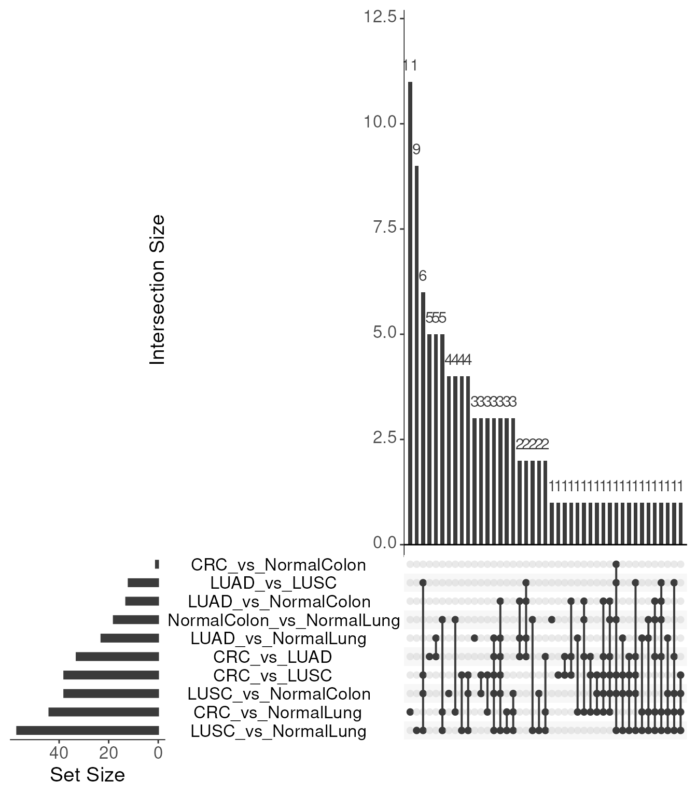
We can also summarise a set of windows by gene, to determine how many times each gene is present. This can be useful to get an idea of immediate hits, but caution is recommended, as the window annotation is not always perfect (for instance overlapping genes on different strands).
annoDMRs |>
summariseDMRsByGene()
#> # A tibble: 10 × 4
#> ENSEMBL SYMBOL GENENAME n
#> <chr> <chr> <chr> <int>
#> 1 ENSG00000233429 HOTAIRM1 HOXA transcript antisense RNA, myeloid-speci… 7
#> 2 ENSG00000253405 EVX1-AS EVX1 antisense RNA 6
#> 3 NA HOTTIP HOXA distal transcript antisense RNA 6
#> 4 ENSG00000240990 HOXA11-AS HOXA11 antisense RNA 5
#> 5 ENSG00000106038 EVX1 even-skipped homeobox 1 2
#> 6 NA HOXA-AS2 HOXA cluster antisense RNA 2 2
#> 7 ENSG00000005020 SKAP2 src kinase associated phosphoprotein 2 1
#> 8 ENSG00000050344 NFE2L3 NFE2 like bZIP transcription factor 3 1
#> 9 ENSG00000122592 HOXA7 homeobox A7 1
#> 10 ENSG00000254369 HOXA-AS3 HOXA cluster antisense RNA 3 1We can use the plotRegionsHeatmap function to plot a
heatmap of selected windows. This takes a qseaSet as the first argument,
and either a GRanges object or a data frame with columns
seqnames, start and end as the
second argument.
exampleTumourNormal |>
addLibraryInformation() |>
plotRegionsHeatmap(regionsToOverlap = DMRsCovariatePatient)
#> Generating table of beta values for 32 regions across 10 samples.
#> No empty columns to remove.
#> No empty rows to remove.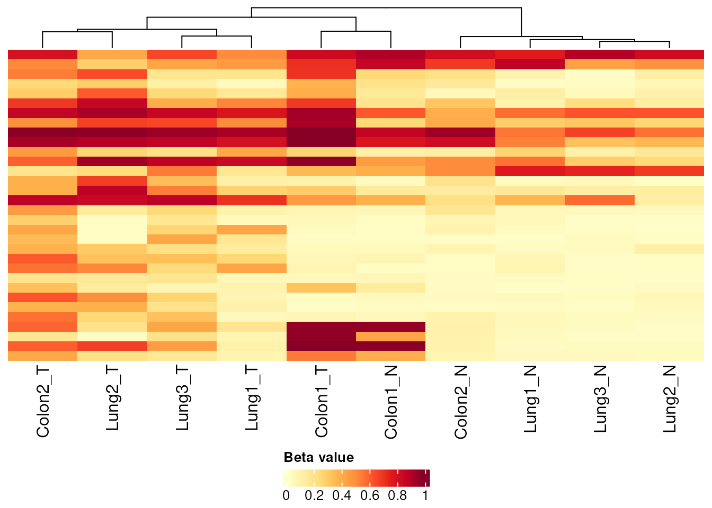
We can add sample annotation bars to the top of the heatmap by using the sampleAnnotation option:
exampleTumourNormal |>
addLibraryInformation() |>
plotRegionsHeatmap(regionsToOverlap = DMRsCovariatePatient,
sampleAnnotation = tumour)
#> Generating table of beta values for 32 regions across 10 samples.
#> No empty columns to remove.
#> No empty rows to remove.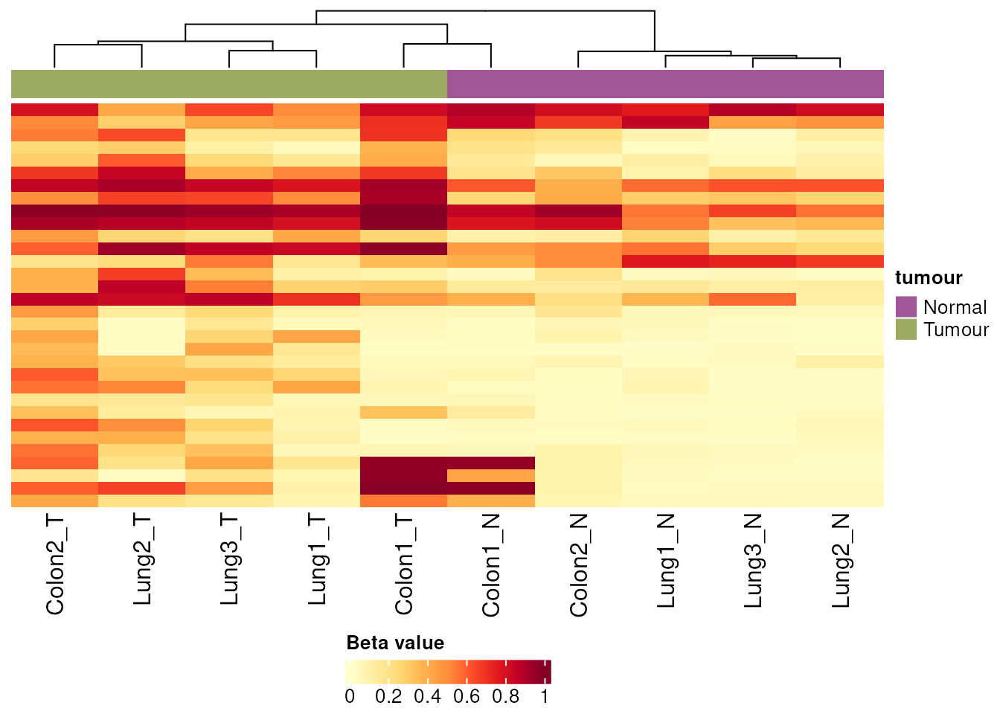
Note that the annotation option allows for tidy evaluation, so we can also specify the columns unquoted:
exampleTumourNormal |>
plotRegionsHeatmap(regionsToOverlap = DMRsCovariatePatient,
sampleAnnotation = c(tumour, type))
#> Generating table of beta values for 32 regions across 10 samples.
#> No empty columns to remove.
#> No empty rows to remove.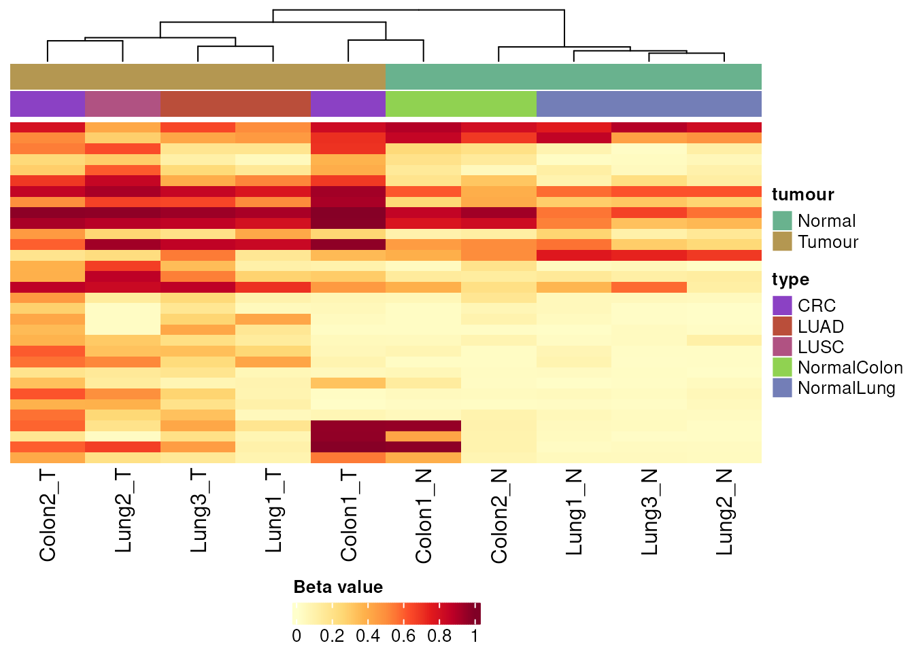
The default is to plot beta values, but you can change that via the
normMethod option, for instance to get normalised reads per
million nrpm:
exampleTumourNormal |>
addLibraryInformation() |>
plotRegionsHeatmap(regionsToOverlap = DMRsCovariatePatient,
normMethod = "nrpm")
#> Generating table of nrpm values for 32 regions across 10 samples.
#> No empty columns to remove.
#> No empty rows to remove.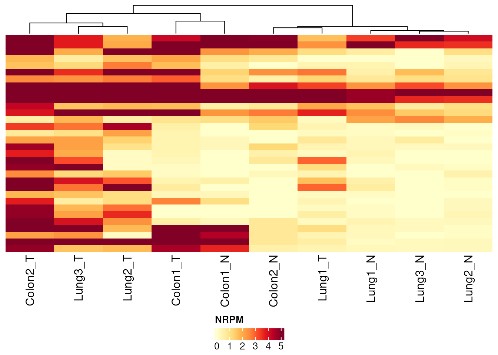
This normMethod option occurs in a number of functions
throughout the package, with the typical choices of counts,
nrpm or beta (other options exist within
qsea).
Annotation colours can be chosen, but with a rather specific requirement for how they specified. This is a list, containing named elements (for some/all annotation columns), each containing a named vector, names being the levels of the annotation and values being the colours. We can specify colours for just one variable (with the second being chosen automatically):
exampleTumourNormal |>
plotRegionsHeatmap(regionsToOverlap = DMRsCovariatePatient,
sampleAnnotation = c("tumour", "type"),
annotationColors = list(tumour = c("Normal" = "blue",
"Tumour" = "firebrick4"))
)
#> Generating table of beta values for 32 regions across 10 samples.
#> No empty columns to remove.
#> No empty rows to remove.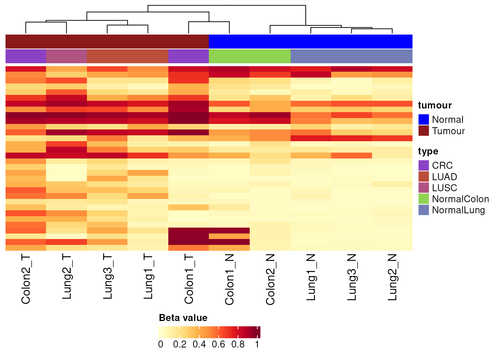
Or both variables:
annotColours <- list(tumour = c("Normal" = "blue", "Tumour" = "firebrick4"),
type = c("CRC" = "orange","LUAD" = "lightgreen", "LUSC" = "darkgreen",
"NormalColon" = "tan", "NormalLung" = "grey"))
exampleTumourNormal |>
plotRegionsHeatmap(regionsToOverlap = DMRs,
sampleAnnotation = c("tumour", "type"),
annotationColors = annotColours
)
#> Generating table of beta values for 23 regions across 10 samples.
#> No empty columns to remove.
#> No empty rows to remove.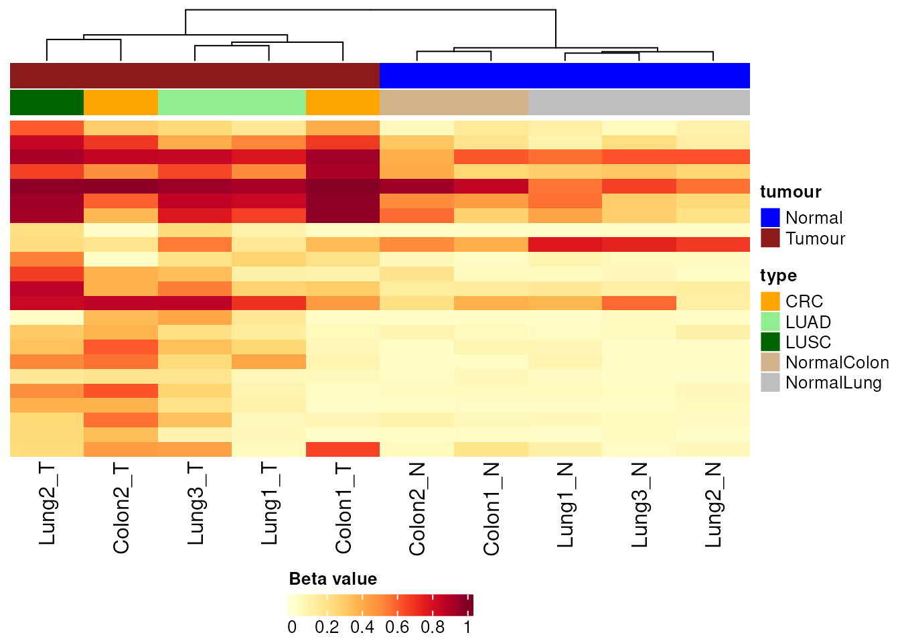
Rows can be clustered using the clusterRows = TRUE
option:
exampleTumourNormal |>
plotRegionsHeatmap(regionsToOverlap = DMRsCovariatePatient,
sampleAnnotation = c("tumour", "type"),
annotationColors = annotColours,
clusterRows = TRUE,
)
#> Generating table of beta values for 32 regions across 10 samples.
#> No empty columns to remove.
#> No empty rows to remove.
#> No almost empty rows to remove.
#> No almost empty rows to remove.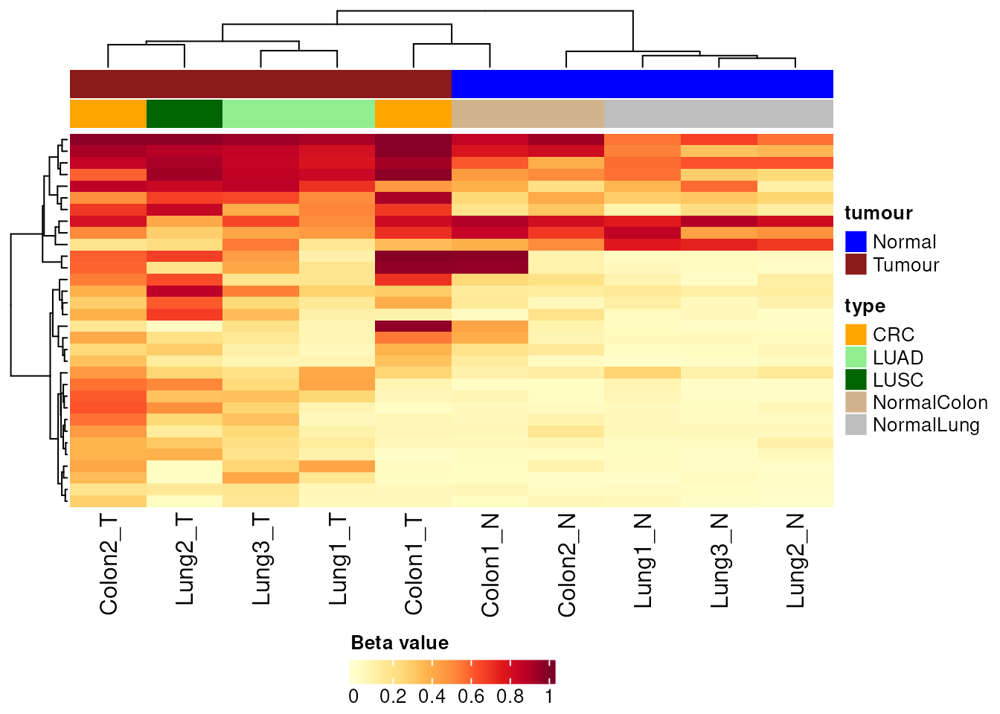
While the columns can be controlled with clusterCols. By
default the columns are clustered but the rows not, mostly to save
computational speed. The number of clusters to break the column
dendrogram into can be controlled using clusterNum
(defaulting to 1, i.e. no breaks):
exampleTumourNormal |>
plotRegionsHeatmap(regionsToOverlap = DMRsCovariatePatient,
sampleAnnotation = c("tumour", "type"),
annotationColors = annotColours,
clusterNum = 3
)
#> Generating table of beta values for 32 regions across 10 samples.
#> No empty columns to remove.
#> No empty rows to remove.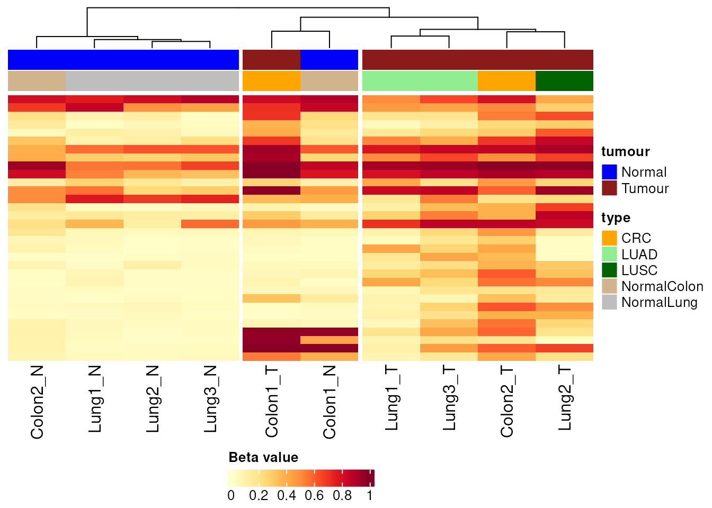
Note that the default clustering method to use for the dendrogram is
set as clusterMethod = "ward.D2"; other options can be
used.
#> R version 4.5.2 (2025-10-31)
#> Platform: x86_64-pc-linux-gnu
#> Running under: Ubuntu 24.04.3 LTS
#>
#> Matrix products: default
#> BLAS: /usr/lib/x86_64-linux-gnu/openblas-pthread/libblas.so.3
#> LAPACK: /usr/lib/x86_64-linux-gnu/openblas-pthread/libopenblasp-r0.3.26.so; LAPACK version 3.12.0
#>
#> locale:
#> [1] LC_CTYPE=en_US.UTF-8 LC_NUMERIC=C
#> [3] LC_TIME=en_US.UTF-8 LC_COLLATE=en_US.UTF-8
#> [5] LC_MONETARY=en_US.UTF-8 LC_MESSAGES=en_US.UTF-8
#> [7] LC_PAPER=en_US.UTF-8 LC_NAME=C
#> [9] LC_ADDRESS=C LC_TELEPHONE=C
#> [11] LC_MEASUREMENT=en_US.UTF-8 LC_IDENTIFICATION=C
#>
#> time zone: UTC
#> tzcode source: system (glibc)
#>
#> attached base packages:
#> [1] stats4 stats graphics grDevices utils datasets methods
#> [8] base
#>
#> other attached packages:
#> [1] org.Mm.eg.db_3.22.0 org.Hs.eg.db_3.22.0 AnnotationDbi_1.72.0
#> [4] IRanges_2.44.0 S4Vectors_0.48.0 Biobase_2.70.0
#> [7] BiocGenerics_0.56.0 generics_0.1.4 ggplot2_4.0.2
#> [10] mesa_0.99.0 dplyr_1.2.0 qsea_1.36.0
#>
#> loaded via a namespace (and not attached):
#> [1] splines_4.5.2
#> [2] BiocIO_1.20.0
#> [3] bitops_1.0-9
#> [4] ggplotify_0.1.3
#> [5] tibble_3.3.1
#> [6] R.oo_1.27.1
#> [7] polyclip_1.10-7
#> [8] janitor_2.2.1
#> [9] XML_3.99-0.23
#> [10] lifecycle_1.0.5
#> [11] doParallel_1.0.17
#> [12] lattice_0.22-9
#> [13] MASS_7.3-65
#> [14] magrittr_2.0.4
#> [15] limma_3.66.0
#> [16] sass_0.4.10
#> [17] rmarkdown_2.30
#> [18] plotrix_3.8-14
#> [19] jquerylib_0.1.4
#> [20] yaml_2.3.12
#> [21] otel_0.2.0
#> [22] ggtangle_0.1.1
#> [23] cowplot_1.2.0
#> [24] DBI_1.3.0
#> [25] RColorBrewer_1.1-3
#> [26] lubridate_1.9.5
#> [27] abind_1.4-8
#> [28] GenomicRanges_1.62.1
#> [29] purrr_1.2.1
#> [30] R.utils_2.13.0
#> [31] RCurl_1.98-1.18
#> [32] yulab.utils_0.2.4
#> [33] tweenr_2.0.3
#> [34] rappdirs_0.3.4
#> [35] circlize_0.4.17
#> [36] gdtools_0.5.0
#> [37] enrichplot_1.30.5
#> [38] ggrepel_0.9.8
#> [39] tidytree_0.4.7
#> [40] pkgdown_2.2.0
#> [41] ChIPseeker_1.46.1
#> [42] codetools_0.2-20
#> [43] DelayedArray_0.36.0
#> [44] DOSE_4.4.0
#> [45] ggforce_0.5.0
#> [46] shape_1.4.6.1
#> [47] tidyselect_1.2.1
#> [48] aplot_0.2.9
#> [49] UCSC.utils_1.6.1
#> [50] HMMcopy_1.52.0
#> [51] farver_2.1.2
#> [52] matrixStats_1.5.0
#> [53] Seqinfo_1.0.0
#> [54] GenomicAlignments_1.46.0
#> [55] jsonlite_2.0.0
#> [56] GetoptLong_1.1.0
#> [57] iterators_1.0.14
#> [58] systemfonts_1.3.2
#> [59] foreach_1.5.2
#> [60] tools_4.5.2
#> [61] ggnewscale_0.5.2
#> [62] progress_1.2.3
#> [63] treeio_1.34.0
#> [64] TxDb.Hsapiens.UCSC.hg19.knownGene_3.22.1
#> [65] ragg_1.5.2
#> [66] Rcpp_1.1.1
#> [67] glue_1.8.0
#> [68] gridExtra_2.3
#> [69] SparseArray_1.10.9
#> [70] xfun_0.57
#> [71] qvalue_2.42.0
#> [72] MatrixGenerics_1.22.0
#> [73] GenomeInfoDb_1.46.2
#> [74] withr_3.0.2
#> [75] fastmap_1.2.0
#> [76] boot_1.3-32
#> [77] caTools_1.18.3
#> [78] digest_0.6.39
#> [79] timechange_0.4.0
#> [80] R6_2.6.1
#> [81] gridGraphics_0.5-1
#> [82] colorspace_2.1-2
#> [83] textshaping_1.0.5
#> [84] GO.db_3.22.0
#> [85] gtools_3.9.5
#> [86] RSQLite_2.4.6
#> [87] cigarillo_1.0.0
#> [88] R.methodsS3_1.8.2
#> [89] UpSetR_1.4.0
#> [90] utf8_1.2.6
#> [91] tidyr_1.3.2
#> [92] fontLiberation_0.1.0
#> [93] data.table_1.18.2.1
#> [94] rtracklayer_1.70.1
#> [95] prettyunits_1.2.0
#> [96] httr_1.4.8
#> [97] htmlwidgets_1.6.4
#> [98] S4Arrays_1.10.1
#> [99] scatterpie_0.2.6
#> [100] pkgconfig_2.0.3
#> [101] gtable_0.3.6
#> [102] blob_1.3.0
#> [103] ComplexHeatmap_2.26.1
#> [104] S7_0.2.1
#> [105] XVector_0.50.0
#> [106] htmltools_0.5.9
#> [107] fontBitstreamVera_0.1.1
#> [108] fgsea_1.36.2
#> [109] clue_0.3-67
#> [110] plyranges_1.30.1
#> [111] scales_1.4.0
#> [112] hues_0.2.0
#> [113] TxDb.Hsapiens.UCSC.hg38.knownGene_3.22.0
#> [114] png_0.1-9
#> [115] snakecase_0.11.1
#> [116] ggfun_0.2.0
#> [117] knitr_1.51
#> [118] reshape2_1.4.5
#> [119] rjson_0.2.23
#> [120] nlme_3.1-168
#> [121] curl_7.0.0
#> [122] GlobalOptions_0.1.3
#> [123] cachem_1.1.0
#> [124] zoo_1.8-15
#> [125] stringr_1.6.0
#> [126] KernSmooth_2.23-26
#> [127] parallel_4.5.2
#> [128] restfulr_0.0.16
#> [129] desc_1.4.3
#> [130] pillar_1.11.1
#> [131] grid_4.5.2
#> [132] vctrs_0.7.2
#> [133] gplots_3.3.0
#> [134] tidydr_0.0.6
#> [135] cluster_2.1.8.2
#> [136] evaluate_1.0.5
#> [137] GenomicFeatures_1.62.0
#> [138] cli_3.6.5
#> [139] compiler_4.5.2
#> [140] Rsamtools_2.26.0
#> [141] rlang_1.1.7
#> [142] crayon_1.5.3
#> [143] labeling_0.4.3
#> [144] plyr_1.8.9
#> [145] fs_2.0.1
#> [146] TxDb.Mmusculus.UCSC.mm10.knownGene_3.10.0
#> [147] ggiraph_0.9.6
#> [148] stringi_1.8.7
#> [149] BiocParallel_1.44.0
#> [150] Biostrings_2.78.0
#> [151] lazyeval_0.2.2
#> [152] GOSemSim_2.36.0
#> [153] fontquiver_0.2.1
#> [154] Matrix_1.7-5
#> [155] BSgenome_1.78.0
#> [156] hms_1.1.4
#> [157] patchwork_1.3.2
#> [158] bit64_4.6.0-1
#> [159] KEGGREST_1.50.0
#> [160] statmod_1.5.1
#> [161] SummarizedExperiment_1.40.0
#> [162] igraph_2.2.2
#> [163] memoise_2.0.1
#> [164] bslib_0.10.0
#> [165] ggtree_4.0.5
#> [166] fastmatch_1.1-8
#> [167] bit_4.6.0
#> [168] ape_5.8-1